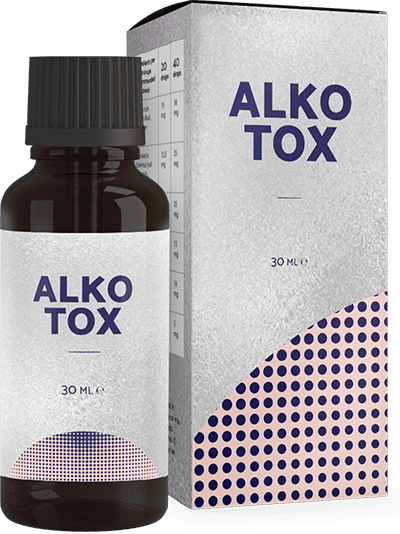

Ως εξαρτησιολόγος, λέω ότι όλοι μπορούν να σταματήσουν να πίνουν
Για περισσότερα από 20 χρόνια δούλευα ως εξαρτησιολόγος σε μια μεγάλη κλινική. Καθ’ όλη τη διάρκεια της πρακτικής μου κατάφερα να βοηθήσω εκατοντάδες ανθρώπους στην καταπολέμηση του εθισμού. Έσωσα κυριολεκτικά πολλές ζωές και ούτε ποτέ μπορούσα να σκεφτώ ότι ο γιος μου θα ήταν ανάμεσά τους. Πολύ καιρό δεν μπορούσα να τον βοηθήσω με τους τρόπους που ήξερα, και είχα σχεδόν απελπιστεί. Κατάφερα να βρω μια νέα μέθοδο. Τώρα θέλω να πω σε όλους πώς να απαλλαγούν από τον εθισμό και να κόψουν το αλκοόλ μια για πάντα.

Ανατρέχοντας στο παρελθόν, καταλαβαίνω ότι η κλινική, οι ασθενείς, τα σεμινάρια και τα συνέδρια ήταν πιο σημαντικά από την οικογένειά μου. Θυσιαζόμουν για άλλους, παραμελώντας την προσωπική μου ζωή. Ίσως γι’ αυτό ο γιος μου έγινε ασθενής μου λόγω της υποσυνείδητης επιθυμίας να έρθει πιο κοντά μου. Οι δυσκολίες στην οικογένεια και οι διαφωνίες μεταξύ των αγαπημένων προσώπων είναι μία από τις κύριες αιτίες του αλκοολισμού. Μετά είναι τα προβλήματα στη δουλειά, με τα λεφτά, στις σχέσεις με τους ανθρώπους, τις ψυχολογικές και φυσιολογικές παρεκκλίσεις.
Η σύζυγός μου και εγώ κάναμε τα πάντα για να δώσουμε στον γιο μας καλή μόρφωση και μια αξιοπρεπή ζωή. Μόνο τώρα καταλαβαίνω ότι του έλειπε η επικοινωνία μαζί μου. Γι’ αυτό, στο κολέγιο δοκίμασε το αλκοόλ και δεν μπορούσε να σταματήσει. Στην αρχή κατάφερνε να κρύβει το πρόβλημα με το αλκοόλ ...
Θυμάμαι την ημέρα που με κάλεσαν και μου άνοιξαν τα μάτια. Πριν από έξι μήνες τον διέγραψαν και άρχισε να πίνει κάθε μέρα. Πήρε την κάτω βόλτα: τον παράτησε η κοπέλα του, καβγάδες σε μπαρ, ανήθικη συμπεριφορά και τα πρώτα προβλήματα με το νόμο. Δεν τα ήξερα όλα αυτά και ούτε καν το υποψιαζόμουν...

Μας περίμεναν δύο χρόνια δύσκολης αποκατάστασης. Έκανα τα πάντα για να τον βοηθήσω. Ο γιος μου θεραπεύτηκε, καθάριζε το αίμα του, υποβλήθηκε σε ψυχοθεραπεία. Μετά από λίγο, σημειώνονταν αξιοσημείωτες βελτιώσεις. Έπαιρνε εξιτήριο και πήγαινε αμέσως στα μπαρ. Το χειρότερο δεν ήταν ο χλευασμός των ανθρώπων ότι είμαι κακός εξαρτησιολόγος και δεν μπορώ να θεραπεύσω τον γιο μου, αλλά το ότι είμαι πραγματικά ανίκανος και το παιδί μου δηλητηριάζεται κάθε μέρα και καταστρέφει τη ζωή του.
Με την πάροδο του χρόνου, ο ψυχολόγος βοήθησε στη βελτίωση της σχέσης μας. Ο γιος παραδέχτηκε ότι δεν είναι πλέον θυμωμένος μαζί μου. Απλά το να σταματήσει να πίνει είναι πάνω από τις δυνάμεις του. Σαν να τον αναγκάζει κάποιος να το κάνει και δεν μπορεί να σταματήσει. Με άλλα λόγια, το πρόβλημα δεν ήταν ψυχολογικό, αλλά σωματικός εθισμός, τον οποίο δεν μπορούσε να αποβάλλει με τίποτα. Φυσικά, ήξερα ότι αυτό συμβαίνει. Οι παραδοσιακές μέθοδοι θεραπείας, οι οποίες χρησιμοποιούνται σε όλο τον κόσμο, δεν βοηθούσαν, και Άρχισα να ψάχνω για άλλες λύσεις, εντελώς διαφορετικές.

Σε ένα από τα διαδικτυακά συνέδρια, ο τελευταίος που μίλησε για το θέμα που με ενδιέφερε ήταν ένας άγνωστος μέχρι εκείνη τη στιγμή γιατρός-εξαρτησιολόγος. Ένα νέο φάρμακο που παρουσίασε εξαιρετικά στατιστικά στοιχεία για τη θεραπεία του αλκοολισμού ήταν ήδη μέρος της θεραπείας σε γειτονικές χώρες.

Αυτό που έμαθα ήταν ότι το δεν περιέχει αποκλειστές, ηρεμιστικά και άλλες κοινές ουσίες. Περιέχει φυσικά εκχυλίσματα που εκτελούν τις κύριες λειτουργίες στη θεραπεία του εθισμού στο αλκοόλ:
- παράγει μια φυσική αντίδραση στο αλκοόλ;
- βελτιώνουν τις ψυχικές και φωνητικές λειτουργίες,
- ανακουφίζουν από τα συμπτώματα στέρησης;
- βελτιώνουν τον ψυχισμό, αφαιρώντας τα σημάδια της επιθετικότητας και της κατάθλιψης.
- καθαρίζουν το αίμα και τα αιμοφόρα αγγεία;
- αφαιρούν τις τοξικές ουσίες από το σώμα.
Ως ειδικός με πολύ πολύχρονη εμπειρία, ήταν δύσκολο να το πιστέψω. Ένα τέτοιο αποτέλεσμα δεν μπορούσε να το πετύχει κανένα φάρμακο, αλλά μόνο σε συνδυασμό με άλλα. Αφού είχα δοκιμάσει όλες τις γνωστές μεθόδους και δεν βοήθησαν, αποφάσισα να δώσω στον γιο μου το .
Ο γιος μου έπινε ασταμάτητα επί δύο εβδομάδες. Το πρωί, για να συνέλθει από το μεθύσι το προηγούμενο βράδυ, του έδωσα . Μετά από μια ώρα έκανε ένα ντους και βγήκε για πρωινό. Για πρώτη φορά μετά από καιρό δεν ένιωθε άσχημα. Πράγματι, τα χέρια του δεν έτρεμαν, η φωνή του ήταν ήρεμη, οι κόρες των ματιών του ήταν όπως ενός φυσιολογικού ανθρώπου. Δεν υπήρχαν σημάδια ότι είχε πιεί. Αστειεύτηκε ακόμη και χαμογελούσε, σαν να χθες δεν ήταν ξαπλωμένος μεθυσμένος σε μια λακκούβα του εμετού του ...

Μετά από δύο εβδομάδες λήψης του φαρμάκου, ο γιος δεν είχε πιεί ούτε μία φορά, αλλά είχε μια φυσιολογική ζωή. Ο γιος μου έκανε εξετάσεις και τα αποτελέσματα με εξέπληξαν - όλοι οι δείκτες ήταν σε φυσιολογικό επίπεδο, το αίμα δεν περιείχε τοξίνες και προσμείξεις. Και το πιο σημαντικό, σταμάτησε να πίνει. Για πολύ άραγε; Όπως αποδείχθηκε, ναι.
Μετά από άλλη μια εβδομάδα, παραδέχτηκε ότι δεν πίστευε ότι η νέα θεραπεία θα βοηθήσει, άρχισε να το παίρνει μόνο για χάρη μου. Μετά απλά σταμάτησε να σκέφτεται ότι ήθελε να πιει. Άρχισε να σκέφτεται θετικά, βελτιώθηκε η όλη κατάστασή του. Σκόπευε ακόμη και να βρει δουλειά και να ξαναρχίσει τις σπουδές του τον επόμενο χρόνο.
Έχουν περάσει έξι μήνες από τότε που ο γιος μου άρχισε να πίνει το . Όλο αυτό το διάστημα δεν ήπιε ούτε γουλιά και επέστρεψε στην κανονική ζωή. Τώρα βοηθάω ακόμη και αυτούς που θεωρούσα απελπισμένους ασθενείς. Κατάφερα να προμηθεύουν το στη χώρα μας. Και ακόμη περισσότερα! Τώρα οποιοσδήποτε μπορεί να το παραγγείλει απευθείας από το σάιτ του κατασκευαστή χωρίς να πληρώνει παραπάνω και δασμούς.
Εάν εσείς ή οι αγαπημένοι σας δεν μπορείτε να απαλλαγείτε από τον εθισμό και έχετε απελπιστεί να ξέρετε πως πάντα υπάρχει μια διέξοδος! Πριν από λίγο εγώ ο ίδιος ήμουν στη θέση σας, αν και νόμιζα πώς λόγω του επαγγέλματος δεν θα μου συνέβαινε ποτέ κάτι παρόμοιο. Υπάρχουν διαφορετικές συνθήκες στη ζωή. Ξέρω πόσο ξοδεύουν οι άνθρωποι για την αποκατάστασή τους. Στις περισσότερες περιπτώσεις, τέτοια μεγάλα ποσά δεν μπορεί να τα πληρώσει το 85% των ασθενών. Θέλω να βοηθήσω όλους και δίνω έκπτωση 50% στο . Αγοράζοντας αυτό το προϊόν, θα απαλλαγείτε μια για πάντα από τον εθισμό στο αλκοόλ.